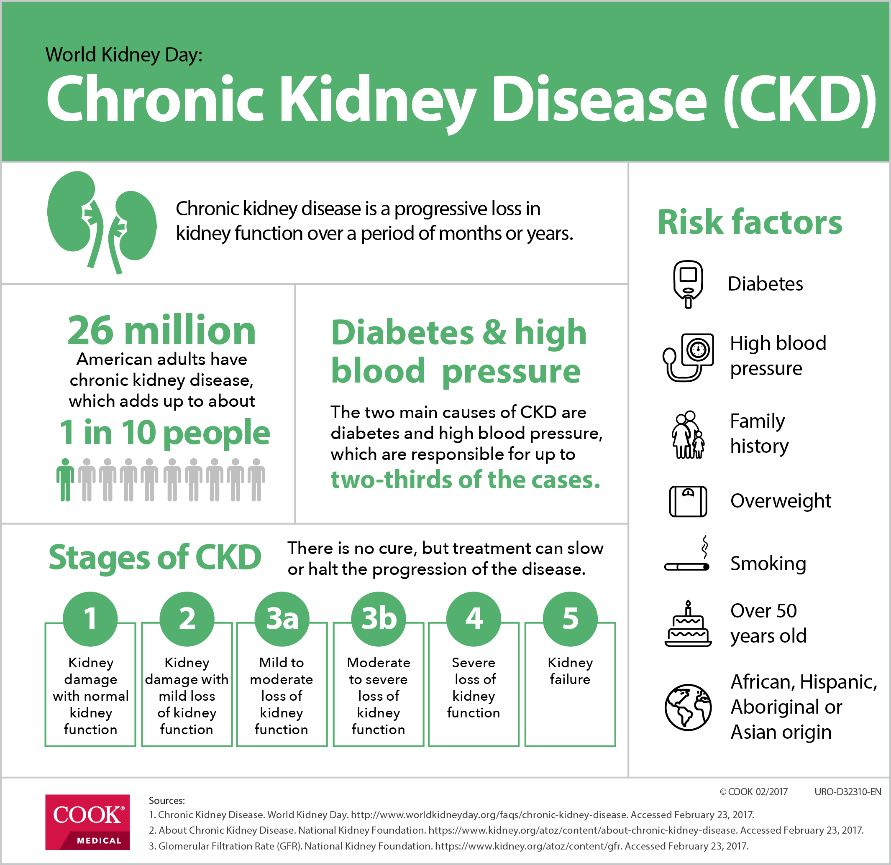
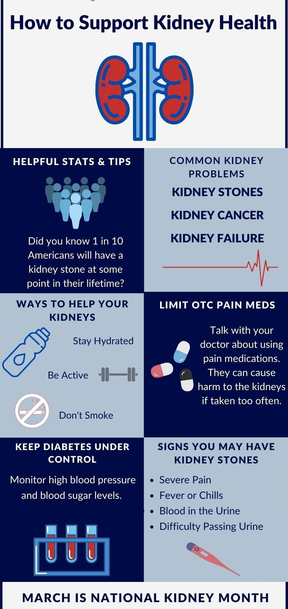

*About Chronic Kidney Disease
CKD is a condition in which the kidneys are damaged and cannot filter blood as well as they should. Because of this, excess fluid and waste from blood remain in the body and may cause other health problems, such as heart disease and stroke.*
*kidney disease is one of the leading cause of death in the world, but there are ways to prevent and manage many types of kidney disease.